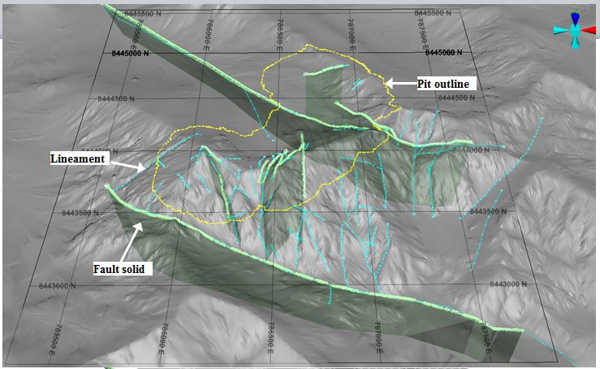

John Fedorowich Structural Geology Consulting Inc.
Structural Geology Consulting Services

- Detailed structural field mapping incorporating precision GPS data capture
- ArcGIS lineament interpretation using orthophoto, LIDAR, satellite, and geophysical datasets
- Datamine 3D structural modelling that incorporates mapping, scanner data, & drill hole information
- WellCad ATV and OPTV analyses of faults joints and breakout information
- Conventional underground back and wall mapping of structures, lithology, and mineralization
- 3D Stereo photogrammetric structural analysis on open pit walls and underground cuts
- Orientation analyses with DIPS, and Structural analysis with various kinematic software
- Detailed core logging of geological structures in drill core and guidance
- Microtectonic analysis and radiometric dating